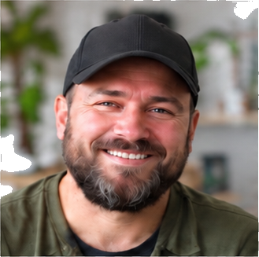
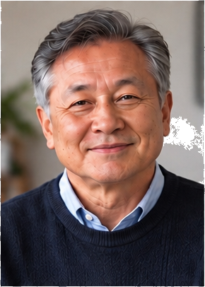
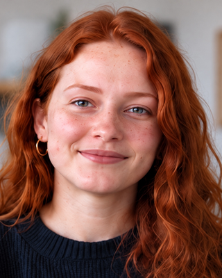

AYS
SPİ
ESP
01Modül şeridi★
Her modül kendi şeridinde; kategoriler aynı listede karışmaz.
Her kart bir özelliği canlı gösterir. ★ işaretliler önce yapılacaklar; tema düğmesi aynı dilin açık halini gösterir.
12 özellik · her sistemde aynı
Her modül kendi şeridinde; kategoriler aynı listede karışmaz.
Simge + ad + kesinlik etiketi. Kutunun ne olduğu başlıktan okunur.
Her «Bugün» ekranı aynı sırada: Şimdi → Durum → Öneri.
Karakterli başlık, sade metin, eşit aralıklı sayı. Üçü yer değiştirmez.
Eşit genişlikte rakam, sağa hizalı; alt alta değerler kaymaz.
Altı değer dışında boşluk yok; tek kaynaktan dağıtılır.
Gölge yerine üç yüzey tonu ve tek çizgi rengi. Temayı değiştirip bak.
7 işin 3’ü bitti · sıradaki blok 20:30’da
KURAL MOTORU ÜRETİRHer ekranın tepesinde, kodun ürettiği tek cümlelik durum.
Veri yoksa küçük bir çizim ve tek eylem. Boş grafik ya da 0 yok.
Ana düğmede küçük tuş rozeti; ezberlemeden öğrenilir.
2×2 kare: dört sistem; bulunduğun sistem kendi renginde yanar.
Ekranda aynı anda yalnız bir şey nabız atar: sıradaki iş.
8 özellik · etiketsiz sayı yok
Dolu, yarım, kesikli, çizgi. Sayının ne kadar kesin olduğu bir bakışta.
Tahmin olan sayının altı kesik; üzerine gelince kodun aralığı çıkar.
Renk işaretten değil anlamdan gelir: net artışı iyi, borç artışı kötü.
Değer ve eşik aynı çubukta; ne kadar aşıldığı ölçülmeden görülür.
Küçük hedefte yüzde yerine kutucuk; kalan kutu sayılır.
Karşılaştırma ayrı grafik istemez; geçen dönem soluk çizgi.
Son 6 denemede +12 net. KOD
Her grafiğin altında tek okuma cümlesi; ekran okuyucu da bunu okur.
Sayı büyük, birim küçük ve gri. Birim hiç sayı boyutunda olmaz.
10 özellik · sınav hazırlığı
En büyük öğe tek iş; adımlar süreyle orantılı çubukta.
Uzakken sakin, yaklaşınca canlı. Ekrandaki tek hareketli öğe.
Çözerken yalnız ilerleme; doğru/yanlış rengi set bitince açılır.
Önde soru, arkada «neden yanlış». Tekrarda kart çevrilir.
Ders başına tek satır; satır uzunluğu soru sayısı kadar.
Planlanan sorunun ne kadarı çözüldü. Yetenek değil, kapsam.
Sınava kadar her hafta bir tik; ara haftaları taralı.
Orta seviye aksiyon: etkilenen haftalar çizilir, tek onayla uygulanır.
Taşınan blok havada, yeri hayalet çizgi; bırakınca «Geri al».
Ders · konu · sonuç üç çip; Enter ile kaydedilir.
9 özellik · teşhis yok, doz yok
Tek sayı ortada; üç kaynak ayrı dilim, her biri kendi etiketiyle.
Gece tek şerit, uyanmalar kesik; altta haftanın gece dokusu.
Değer, laboratuvar aralığının içinde nokta. Aralık dışı yalnız işaretlenir.
Halka dilimi yerine tabak bölmesi; kalan miktar yazılı.
Küçük kayıt tek dokunuş; altta «Geri al» şeridi.
Biten set dolar; dinlenme süresi kutucuğun içinde akar.
Büyük rakam, sabit birim, dünkü değer ipucu olarak yanında.
Kategori başına şerit ve bütçe çizgisi; aşım yalnız çizginin rengiyle.
Not her kartta değil, ekran altında bir kez; gri ve ikonlu.
8 özellik · sertifika yok, yargı yok
Kalan kartlar arkada yığın; yığın incelikçe bitiş görülür.
Her düğme kartın bir sonraki görülme zamanını söyler.
Günlük hedef halkası; rengi değişmez, yalnız dolar.
Hatırlama düşer, tekrar yükseltir; «bugün» noktası nedenini gösterir.
Basamak içerik sırasıdır, derece değil. Sertifika görünümü yok.
Kitap sırtı: kalınlık sayfa sayısı, alt çizgi okunan oran.
dayanıklı, çabuk toparlanan
“Children are often remarkably resilient.”Tek kelime, anlamı, örnek cümle. Başka hiçbir şey yok.

Bugün 12 yeni kelime; 3’ü dünkü metinden.
Dersin başında ajan portresi ve tek cümle; renk yine ESP.
6 özellik · yalnız önerir
Tekrar borcu %34 · eşik %10
Merkez’in sesi hep mor; modül içeriğiyle asla aynı görünmez.
Seviyeyi katalog belirler; ekran onun kalıbını giyer.
Yalnız değişen blok renkli; gerisi soluk kalır.
Sayı koddan gelir ve çizilir; modelin cümlesi altında, küçük.
Merkez kapalıyken de sakin: modüller onsuz da tam çalışır.
Uygulanan, geçilen, geri alınan; her biri tek satır.
4 özellik · cümle ajandan, sayı koddan

SKonuşan büyür ve renklenir; diğerleri soluk bekler.
Cümle yorum, çip gerçek: sayı kaynağıyla birlikte görünür.

ÇALIŞIYORPortrenin çevresinde ince halka: dönen, sabit ya da yok.
Balonun altında 2–3 kısa cevap; yazmadan konuşma sürer.
4 özellik · yalnız görünürlük, karar yok
Rütbe görseli, çevresinde XP halkası. Tıklayınca eşikler.
Kısa bir parlama; ekranı kapatmaz, işi bölmez.
Her sistemin kendi rütbesi; tanım tek kaynaktan, çerçeve modülden.
Kazanılan renkli, kilitli siluet. XP yalnız burada ve üst çubukta.
5 özellik · azaltılmış harekette durur
Kartlar 80 ms arayla süzülür; hareket istemeyene anında gelir.
Değer değişince rakam yukarı kayar; değişim gözden kaçmaz.
Mevcut şeridin altında incelen çizgi; kalan süre görünür.
1 px iniş ve hafif ton; titreşim yok, ses yok.
Çizelgede ilerleyen ince çizgi; geçmiş saatler taralı.
4 özellik · 390 piksel ve renk körlüğü
Mobilde ana eylem aşağıda; gezinme alt sekme çubuğuna iner.
Şerit yana kayar, modül etiketi solda sabit kalır.
Renk + harf + şekil: daire, kare, üçgen.
İki sütun tek sütuna akar; hiçbir sayı kesilmez.